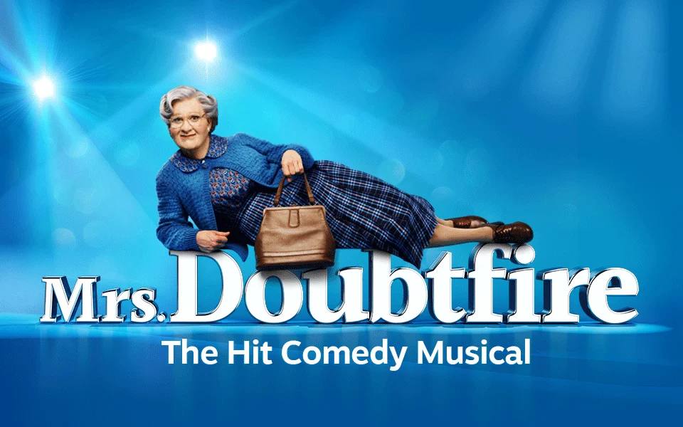

Say "Helloooo, Birmingham!" — the West End and Broadway smash-hit musical comedy Mrs. Doubtfire is officially launching its very first UK and Ireland tour, choosing Birmingham Hippodrome as the proud launchpad for its nationwide journey.
Landing such a massive, critically acclaimed West End production is another huge badge of honour for the region. Over recent years, Birmingham Hippodrome has cemented itself as a cultural powerhouse for the West Midlands, regularly staging major UK tour launches and demonstrating the region's immense appetite for world-class theatre. Welcoming high-calibre productions of this scale not only fuels our booming local arts scene, but also ensures Midlands families and theatregoers get front-row access to the biggest titles in the country without needing a trip down to London.
The hilarious, heartfelt stage adaptation of the classic film will star Olivier-nominated Gabriel Vick as Daniel Hillard / Euphegenia Doubtfire, reprising the showstopping, transformative performance that captivated audiences and critics alike in London's West End.
Created by an award-winning transatlantic team including Wayne Kirkpatrick, Karey Kirkpatrick, John O'Farrell, and four-time Tony-winning director Jerry Zaks, Mrs. Doubtfire is packed with unforgettable film moments alongside infectious original songs. It tells the touching, laugh-out-loud story of out-of-work actor Daniel, who creates the alter ego of Scottish nanny Euphegenia Doubtfire in a desperate bid to stay close to his children after a messy custody battle.
With dazzling quick-changes, brilliant choreography, and plenty of laughs for the whole family, this West End favourite is set to bring pure joy to the Hippodrome stage this season.
Photo Gallery
Production Details & Booking:
Venue: Birmingham Hippodrome, Hurst Street, Southside, Birmingham, B5 4TB
Dates: Thursday 13 August 2026 – Saturday 19 September 2026
Starring: Gabriel Vick as Daniel Hillard / Mrs. Doubtfire
Creative Team: Music & Lyrics by Wayne Kirkpatrick & Karey Kirkpatrick, Book by Karey Kirkpatrick & John O’Farrell, Direction by Jerry Zaks
Box Office: 0121 689 3000
Online Booking: birminghamhippodrome.com